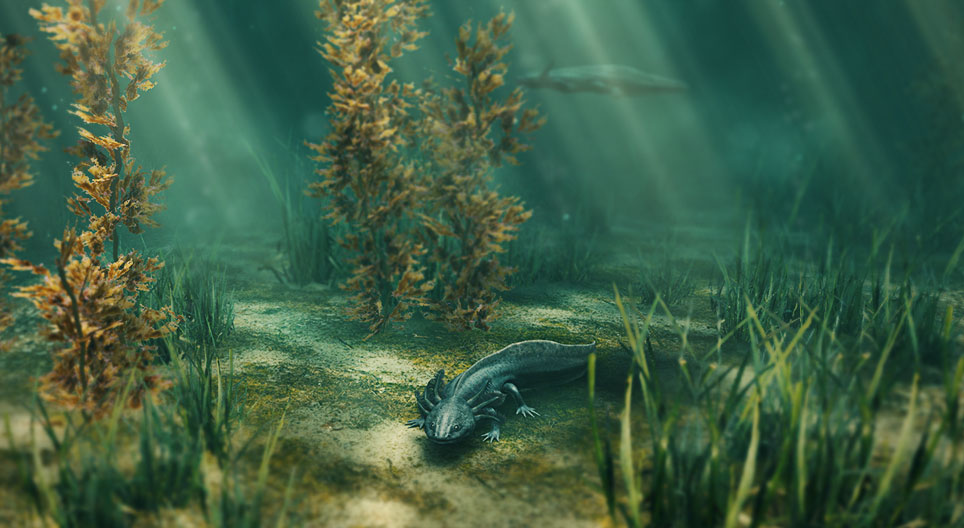

Sua Origem
O axolote é nativo dos lagos e canais da Cidade do México, onde habita as águas doces de forma exclusiva. Seu habitat natural compreende principalmente os sistemas lacustres, como o Xochimilco, uma região de canais sinuosos e lagos interligados. Essa área oferece as condições ideais para a sobrevivência do axolote, caracterizada por águas calmas e vegetação abundante. A adaptação do axolote a esse ambiente específico destaca-se pela sua habilidade em prosperar em condições aquáticas variadas, desde áreas mais profundas até locais mais rasos com vegetação densa. Essa ligação única com os ecossistemas aquáticos da Cidade do México ressalta a importância de preservar esses habitats naturais para garantir a sobrevivência e o bem-estar contínuo dessa fascinante espécie.
